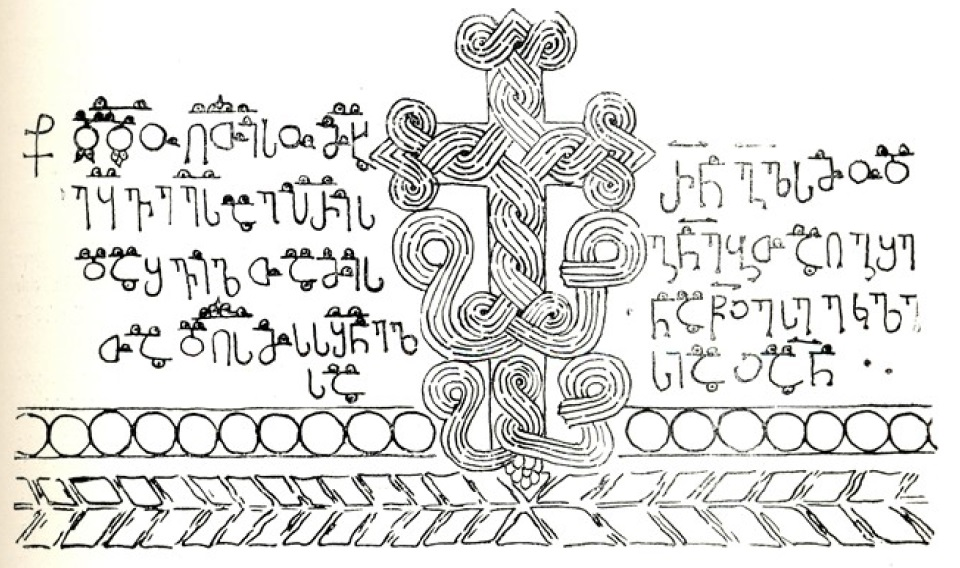

ზედა ვარძიის „კიდურყვავილოვანი“ წარწერა
შინაარსი / Summary
სავედრებელი
ბიბლიოგრაფია Bibliography
კრიტიკული გამოცემა Interpretive Edition
† დ(ე)დ(ა)ო ღ(მრ)თ(ი)ს(ა)ო მ(ეო)ხ(ა)ეყვ ე(რისთავთ)ე(რისთავ)სა ლ(ი)პ(ა)რი(ტ)ს
და შვილთა მის -
თა დღ(ე)ს(ა) მ(ა)ს ს(ა)შ(ი)ნელ -
5სა
რ(ომელმა)ნ გ(უ)ლსმოდ -
გ(ი)ნებ(ი)თ აღგ(ი)შე -
ნა წ(მიდა)ჲ ესე ეკლე -
სიაჲ ა(მე)ნ
დიპლომატიური გამოცემა Diplomatic Edition
† ႣႣႭ ႶႧႱႭ ႫႾႤႷႥ ႤႤႱႠ ႪႮႰႨႱ
ႣႠ ႸႥႨႪႧႠ ႫႨႱ
ႧႠ ႣႶႱ ႫႱ ႱႸႬႤႪ
5ႱႠ
ႰႬ ႢႪႱႫႭႣ
ႢႬႤႡႧ ႠႶႢႸႤ
ႬႠ ႼჂ ႤႱႤ ႤႩႪႤ
ႱႨႠჂ ႠႬ

ზედა ვარძიის „კიდურყვავილოვანი“ წარწერა
{'ka': '† ღვთის დედაო, იმ საშინელ დღეს მეოხ-ეყავ ერისთავთ-ერისთავს ლიპარიტს და მის შვილებს, რომელმაც გულმოდგინებით აგიშენა ეს წმიდა ეკლესია, ამინ.'}
{'default': 'ზედა ვარძიის ღვთისმშობლის სახელობის ეკლესია\n ვარძიის გამოქვაბულების ჩრდილო-დასავლეთით, სამიოდე კილომეტრის მანძილზე მდებარეობს.\n იგი ქვის ფილებითაა მოპირკეთებული და ჩუქურთმებით შემკული.\n გამომცემელი მიიჩნევს, რომ ვარძიის წარწერის ასოებს ბევრი აქვთ საერთო X-XI სს. ხელნაწერთა\n საზედაო ასოებთან. ეს მსგავსება მას აფიქრებინებს, რომ ოსტატს ზედა ვარძიის წარწერის ასოთა მოყვანილობის\n და სამკაულის შერჩევისას ნიმუშად X-XI სს. მიჯნის ერთი ან რამდენიმე ხელნაწერი ჰქონდა აღებული.\n წარწერაში მოხსენიებული ერისთავთ-ერისთავი ლიპარიტი კი შეიძლება ლიპარიტ რატის ძე, ანუ ლიპარიტ II იყოს.\n წარწერაში სიტყვები ერთმანეთისაგან გამიჯნულია.'}
<div type="edition" xml:lang="ka" ana="mtavruli" xml:space="preserve">
<ab>
<lb n="1"/><w lemma="ქრისტე"><expan><abbr>ქ</abbr><ex>რისტ</ex><abbr>ე</abbr></expan></w>
<w lemma="განსუენება"><expan><abbr>გა</abbr><ex>ნ</ex><abbr>ო</abbr><ex>ჳ</ex><abbr>ს</abbr><ex>უ</ex><abbr>ენე</abbr></expan></w>
<w lemma="სულ">სოჳ<lb n="2" break="no"/>ლსა</w>
<name nymRef="ვაჩა">ვაჩაჲს<lb n="3" break="no"/>ასა</name>
<name nymRef="გურა"><expan><abbr>გო</abbr><ex>ჳ</ex><abbr>რაჲ<lb n="4" break="no"/>სასა</abbr></expan></name>
<name nymRef="მირა"><expan><abbr>მ</abbr><ex>ი</ex><abbr>რა</abbr><ex>ჲ</ex><abbr>ს</abbr><ex>ა</ex><abbr>ს</abbr><ex>ა</ex></expan></name>
</ab>
</div>